4 Azure Stack HCI 面向混合云和数据中心现代化的最佳基础设施
- 微软混合云概览
- 混合设计的超融合基础设施
- Azure Arc混合云
- 许可模式
客户环境和应用程序需求是不断发展
通过Azure Arc获得统一的控制平面
- 如何跨不同的环境进行管理和操作？
- 如何确保整个组织的安全性？
- 如何最好地实现创新和开发人员的敏捷性？
- 如何满足临管要求，克服技障碍？
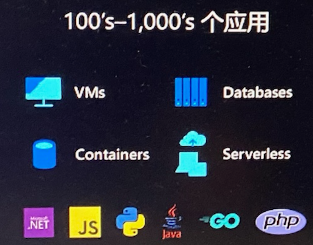
多样化的基础设施
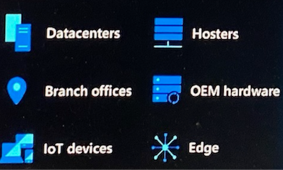
多云
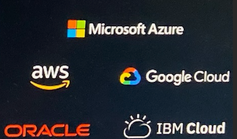
Azure Migrate Support for Azure Stack HCI
Existing Solutions
- Migrate manually
- Migrate with SCVMM
- Migrate with 3rd party tools
Azure Migrate to Azure Stack HCI
- Unified migration tooling
- On-prem to on-prem
- No guest agent
- Minimal downtime
- Replication
- Test migration
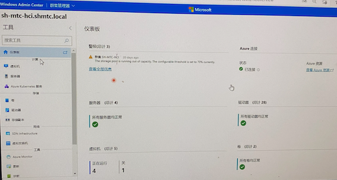
Azure Arc 提供单一控制平面
- 将 Azure 服务运行到任何基础架构上
- 使用 Azure stack 进行数据中心的现代化革新
- 借助Azure loT扩展到边缘位置
Azure Stack HCI
现代化订阅服务，灵活的、熟悉的超融合基础设施
Azure 混合设计
- 与 Azure 原生集成，从 Azure 门户集中管理
- 统一的 Azure 订阅计费，获得 Azure 权益，定期获得功能和安全更新
- 免费获取 Windows Server和SQL Server 2008/2012 扩展安全更新
软件定义的基础架构
- 基于 Hyper-V、存储空间直通和网络控制器的高性能超融合基础架构
- Windows和Linux的安全虚拟化平台，及云原生的容器化平台
- 内置高可用和灾难恢复技术
经过验证的解決方案
- 经过验证的基于标准化参考架构的节点，可支持GPU
- 群集支持1节点到16节点，最小支持单节点部署
- OEM可提供硬件及服务的交付
https://azurestackhcisolutions.azure.microsoft.com
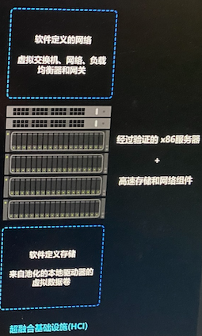
何时使用Azure Stack HCI
当客户需要灵活地满足监管和连接需求时，需要多个用例
- 现代化和安全你的基础设施
- 合理运行智能边缘和远程分支解决方案
- 业界最佳性能的SQL Server数据库
- 通过与Azure Arc支持的 AKS紧密集成，都署云原生应用和Azure Arc支持的服务
- 使用Azure StacK HCK 的Azure 虚拟桌面提供一流的虚拟桌面体验（公开预览2）
Azure Stack HCI 和 Azure Arc 混合云架构
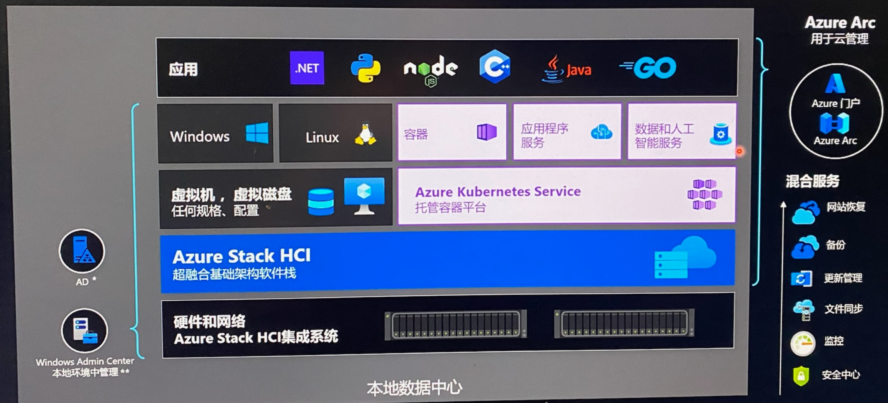
链接到现有的AD服务器, **Windows Admin Center可部署在本地VM (4Core/16G) 或 Azure
通过本机 Azure 集成简化混合
- Azure 资源管理器 (ARM） 资源代表每个本地 Azure Stack HCl 群集
- Azure 门户中的可见性和混合管理的基础
- 本地可通过Windows Admin Center管理
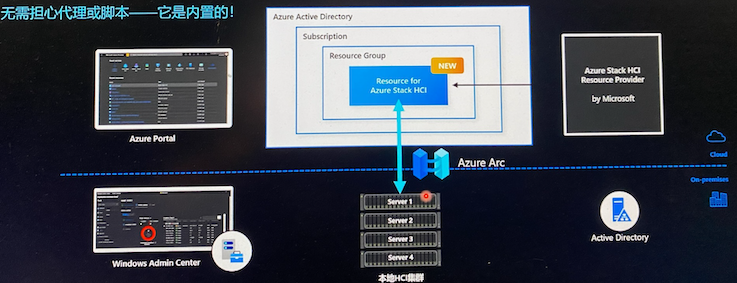
基于延伸群集实现本地灾难恢复
- 建立跨房间、跨建筑甚至跨城市的Azure Stack HCl群集
- 同步或异步存储复制、可选加密方案、站点本地弹性
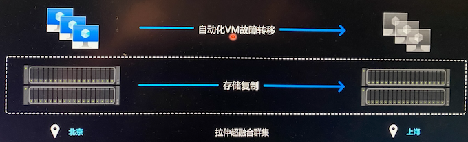
Azure Stack HCI的安全性
确保连接 Azure Arc 工作负载的安全
- Azure Stack HCI 拥有最好的
- Azure 云安全性能，可确保
- 连接到 Azure Arc 的本地工作的安全性。
- Azure Defender - 用于 HCI 上的 Azure Kubernetes Service (AKS)
- 软件定义网络
- 利用弹性工作负载平台
为您的安全环境提供可靠补充
客户可以添加 Azure Stack HCI 节点和更新，对运营安全的影响为零。
为受严格监管的客户提供赋能
客户可以将 Azure Stack HCl 作为认证平台，并为客户提供申计材料（例如，FedRAMP 和 PCI 审计)
- 安全的内核：基于硬件的安全性
- 强化和弹性的平台
- 静志数据和传输中的数据加密
-
Azure Defender: 检测/相应
-
FIPS
- CNSSP-15
- LOA-按需
降低Windows Server安全风险和使用成本
评估2012工作负载的选择：Azure Stack HC提供与Azure同样的免费扩展安全更新
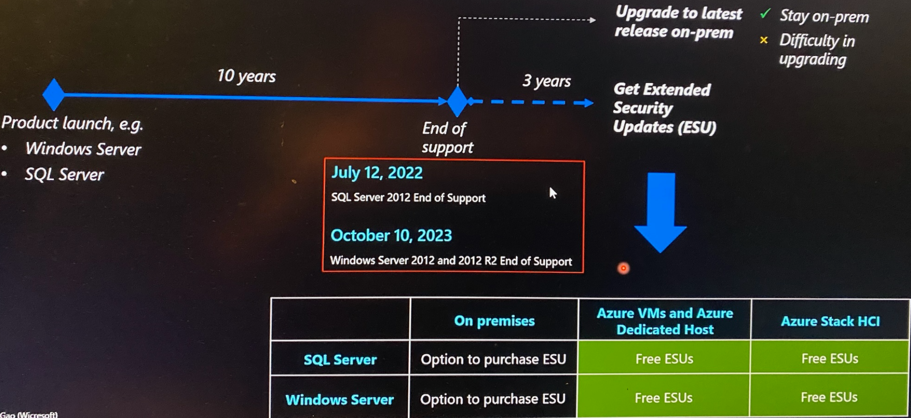
Azure Arc 将Azure创新带到本地基础架构
Azure Arc 提供的单一控制平面
管理本地、多云和边缘环境
- 跨环境管理和治理
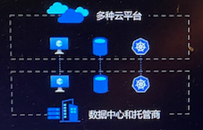
-
大规模 Kubernetes 应用管理
-
随处运行Azure Paas服务
为混合云和多云打造的 一致的Azure 平台
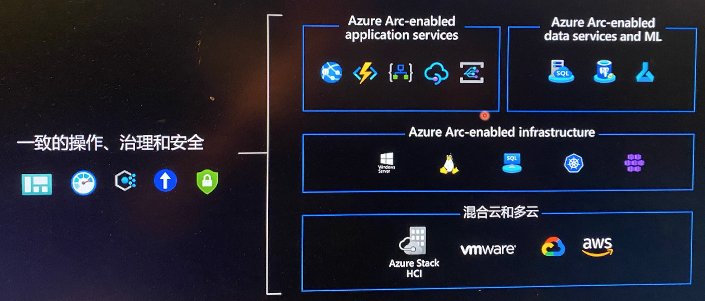
数据不出境 但同时拥有 Azure 优势
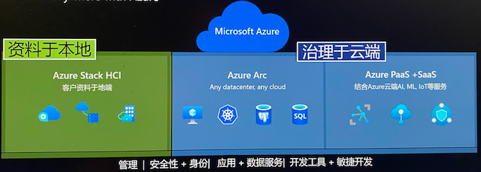
- 在云端运行 Azure 运算服务
- 将Azure 扩展到整个环境连结Azure中上百种服务
- HCI+Arc 在本地端符合客户各式需求
- 在任何地方实施 Azure 安全性及资安服务
启用了 Arc 的 Azure 服务器
- 组织、清点和监控
- 治理与安全
- 简化的基于角色的操作
- 物理，虚拟 Windows, Linux
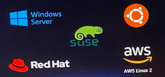
启用了 Azure Arc 的 SQL Server
- 组织、清点和监控
- 治理与安全
- 与现有 SQL 服务器一起使用
- 免费 SQL评估
启用了 Azure Arc 的 Kubernetes
- 组织、清点和监控
- 治理与安全
- 监控和政策
- 基于 GitOps 的零接触部署
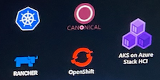
启用Azure Hybrid Cloud的四个步骤
- 部署 Azure Stack HCl， 它会立即在门户中显示为已启用 Azure Arc的资源
- 在门户中的 Arc 中，可以部署容器、虛拟机和服务
- 已部署的资源也会通过 Arc 显示在门户中，因此您可以管理、保护、治理它们
- 通过 Arc提供的 Azure Stack HCI 的支持、可观测性和更新
Azure Stack HCI 计算
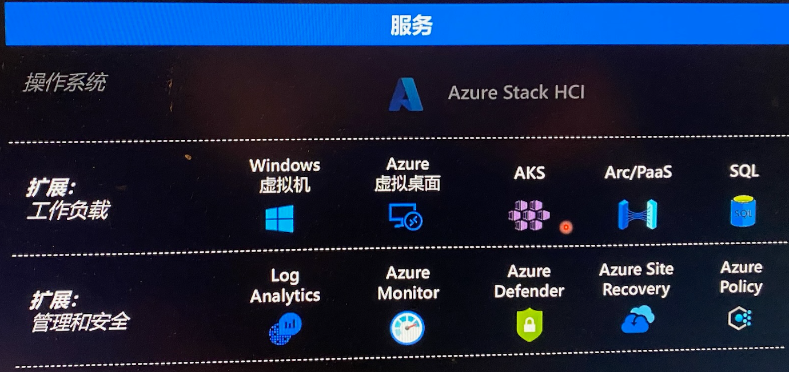
Azure Stack HCI 灵活的计费模式
每月63元人民币 每个物理处理器的核心
- 获益：
- 简单： 无需计算内存 存储或网关入口/出口
Stack HCl 具有始终最新的订阅
- 每月安全和质量更新，在与 Windows 相同的"星期二补丁“时间线上
- 有时，每年一次或两次，每月更新将是具有新功能的所谓"功能更新”
- OEM 固件 驱动程序包通常每季度提供一次
降低客户采用AZS HCI和AKS成本
面相Windows Server+ SA客户新的Azure Hybrid Benefit
Azure Stack HCI
- 使现有数据中心和边缘基础结构现代化，以运行其 VM 和基于容器的工作负荷
- Windows Server Datacenter A Azure Stack HCI.
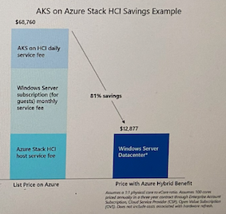
AKS
- 在数据中心使用 AKS 部署和管理容器化应用程序
- Windows Server 软件保障(SA)和云解决方案提供商(CSP)的订阅客户无需额外的费用. 既可以将AKS扩展到Windows Server 和 Azure Stack HCI.
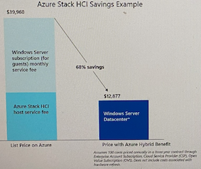